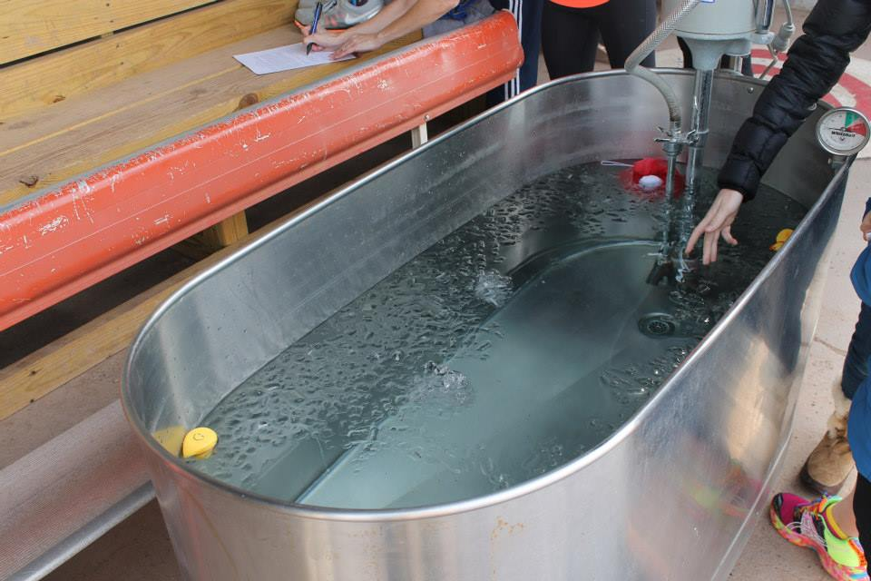

The Art of the Recovery Cycle

Source: https://mlblogsbensbiz.wordpress.com/2014/01/10/minor-league-baseball-on-ice/
In the world of elite sports, recovery is just as important as the workout itself. The introduction of cryotherapy and percussion massage tools has changed how athletes handle post-game soreness. By exposing the body to extreme cold or high-frequency vibrations, players can significantly reduce systemic inflammation and flush out metabolic waste products like lactic acid. This allows for a much faster "turnaround time," enabling teams to play back-to-back games with a lower risk of soft-tissue injuries.
Sleep science has emerged as the ultimate "legal performance enhancer" for the modern competitor. Teams now invest in sleep consultants who monitor circadian rhythms and optimize travel schedules to mitigate the effects of jet lag. Using wearable tech that tracks REM cycles and heart rate variability (HRV), athletes can determine if their nervous system is truly ready for a heavy lifting session or if they need an active recovery day to avoid overtraining syndrome.
Hydrotherapy remains a staple of the recovery process, utilizing the natural buoyancy and thermal properties of water to heal the body. Contrast baths, where an athlete alternates between hot and cold water, create a "pumping" effect in the blood vessels that stimulates circulation. This ancient technique, combined with modern underwater treadmills, allows injured players to maintain their cardiovascular fitness without putting stress on healing joints or ligaments.
Top Recovery Modalities
- Hyperbaric Oxygen Therapy: Increasing oxygen intake to speed up cellular repair.
- Compression Boots: Using pneumatic pressure to improve lymphatic drainage.
- Infrared Saunas: Utilizing deep-penetrating heat to relax muscle fibers.